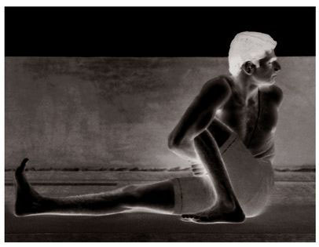
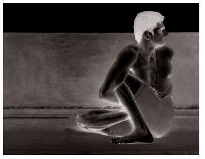
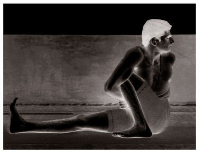

METHOD
For the 7th vinyasa of this asana, again sit as in Paschimattanasana, stretch the left leg out straight, bring the right foot in toward the groin, twisting it so that the toes are pressed to the floor and the heel is pointing up toward the navel, press the right knee forward to a 45 angle, take hold of the left foot with both hands, straighten the back and arms, tighten the anus and lower abdomen, and do puraka. Then, doing rechaka and folding at the waist, place the forehead or chin on the outstretched leg, and press the right heel into the navel, and do puraka and rechaka as much as possible; this is the 8th vinyasa (see figure). Again, doing puraka, lift the head and straighten the arms; this is the 9th vinyasa. The vinyasas that follow are as those in earlier asanas.
BENEFITS
Janu Shirshasana cures maladies such as muthra krcchra [burning while urinating], dhatu krcchra [semen loss], and diabetes. Fluids secreted by the digestive glands—the pancreas, liver, and so on—break down as a result of poor food habits, excessive coffee drinking, indiscriminate movements, the sight of bad things, poor sleeping habits, excessive sex, intercourse at the wrong times, and eating at the wrong times. When this happens, the liver becomes weak and food fails to digest. The vitality, which results from the transformation of digested food, breaks down and tissues become watery, and a man begins to lose his strength. As he weakens further, his urination becomes difficult to control, and he begins involuntarily to urinate. His organ of generation becomes weak and ailments such as muthra krcchra occur. Bedwetting then ensues and his semen is passed out with his urine. Afflictions such as swapna skalana [nocturnal emissions while dreaming] soon develop, weakening the body further. If an affliction of this kind overtakes the body, others will quickly follow, bringing death closer. As disorders such as muthra krcchra and dhatu krcchra are sometimes symptoms of diabetes, it is important to remedy them as early as possible. If one becomes indifferent to them and fails to cure them, then one will develop anemia, which may lead to emaciation and other ailments. It is thus important to be careful regarding these maladies. Medical experts call such ailments yapya roga. Janu Shirshasana destroys these terrible afflictions, and purifies and strengthens the nadi known as sivani, which is related to the dhatu. As the sivani nadi becomes stronger, it destroys defects of the dhatu, as well as diabetes. In addition, Janu Shirshasana purifies and strenghens the virya nala, the nadi that connects to the liver and is responsible for creating insulin. Janu Shirshasana (A & B) press on the virya nala for men, and Janu Shirshasana (C) presses on it for women, though all three are necessary and useful for both men and women alike. In this way, diseases of the type just described will be cured, the fire of hunger increased, and food digested easily.
Janu Shirshasana can be practiced by anyone, man or woman—irrespective of age or sex. In this context, I feel duty bound to say that the reason for the overpopulation of today’s society is the sensory weakness of our youth. Whenever a person controls his sense organs, he has a limited number of children, produces progeny that are intelligent, healthy, and religious, and lives a long life. Therefore, young men and women should practice ways of controlling their sense organs and, thereby, of restricting the numbers of their children, instead of resorting to platform speeches or medical operations, which are not very useful. ⁴ Artificial methods such as these, though helpful to a degree, do not destroy weakness. If our country is to produce robust, intellectual, and long-lived children who believe in God, we must, in my humble opinion, learn ways to control our sense organs. Limiting the number of children is necessary, but it is best to avoid unnatural, allopathic means, which are against nature and bad for the body. Birth control by natural means, on the other hand, helps us to lead long, happy lives, while it, at the same time, nourishes our intellects and frees us from the scourge of disease. Without it, we become subject to sickness, poverty, and shortened lifespans. Aspirants should take this into account. Thus, those that want to lead long, happy lives free from illness, and want to bring forth offspring who are healthy and intellectual, must take to the philosophy of yoga and its practices. This the science of yoga declares like the sounding of a drum. And this I say again to the youth of today, so strongly do I feel about the matter.
MARICHYASANA (C)

MARICHYASANA (D)

NAVASANA

By practicing Janu Shirshasana, the dhatu strengthens and, gradually, the vasana of kama [the tendency to desire] is destroyed. This is confirmed by the scriptures, and has been my own personal experience as well.